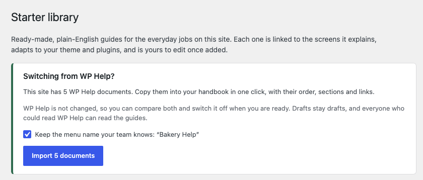
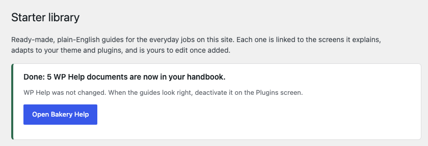
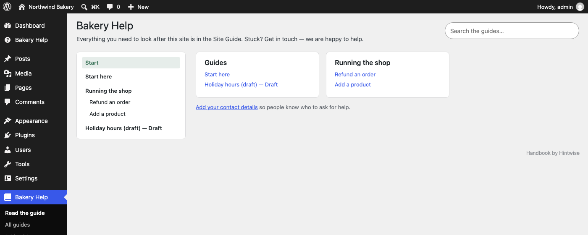

WP Help alternative: move your documents in one click
WP Help has been the go-to plugin for putting a client handbook inside wp-admin. It hasn't been updated since April 2024. This guide shows how to move its documents to a maintained plugin without retyping anything or breaking the links between them.
Status, October 2026: Cedar Hintwise is in the final WordPress.org plugin review. When it's approved it will be free at wordpress.org/plugins/cedar-hintwise and installable from Plugins → Add New.
Where WP Help stands
- Last update: version 1.7.5, April 20, 2024.
- Tested up to: WordPress 6.5. On newer WordPress versions the plugin page warns that it hasn't been tested with your release.
- Still popular: about 1,900 downloads a month on WordPress.org, so plenty of agencies and site owners still rely on it.
Nothing breaks the day a plugin stops being updated, but every new WordPress release is a small risk, and there's nobody to fix problems when they appear. If client documentation matters to you, it's worth moving while everything still works.
How to move, step by step
Takes about five minutes. Keep WP Help active until you've checked the result.
1. Install Cedar Hintwise next to WP Help
Plugins → Add New, search for Cedar Hintwise, install and activate. Both plugins can run side by side.
2. Open the Starter library
Go to Site Guide → Starter library. Hintwise detects your WP Help documents and offers to copy them, and can keep the menu name your team already knows.

3. Click Import

4. Check the handbook, then switch off WP Help
Open the handbook and click through a few guides. Sections, order and drafts are as they were. When you're happy, deactivate WP Help on the Plugins screen.

What comes across
- Titles and content, including block editor content
- Drafts (they stay drafts) and the document order
- Sections: child documents stay under their parent
- Links between documents, rewritten to open the new guides
- Optionally, WP Help's menu name (for example "Bakery Help")
Running the import again later only adds documents written since the last import, so nothing is duplicated. WP Help's own documents are never changed.
Prefer the command line? wp hintwise import-wp-help --dry-run shows what would be imported; drop --dry-run to run it.
What you get on top
| WP Help 1.7.5 | Cedar Hintwise (free) | |
|---|---|---|
| Last updated | April 2024 | Actively maintained |
| Ready-made guides | Start from an empty page | Starter library of plain-English guides that match the site (block or classic theme, WooCommerce) |
| Help on the right screen | — | Pin guides to admin screens; a help button shows them, also in the block editor |
| Who sees what | Everyone who can edit posts | Limit guides to roles, such as shop managers |
| Your contact details | — | Contact card under every guide and in the help panel |
| Reuse on other sites | Free auto-sync from one source site | Export / import a file; automatic sync is in Pro |
Pro adds guided tours, a printable handover pack, required reading and white-label branding. The free plugin is complete on its own; you don't need Pro to switch.
FAQ
Will my clients notice the switch?
If you keep WP Help's menu name, the menu item stays where they expect it, with the same documents in the same order.
Are the guides public?
No. Like WP Help's documents, guides live only in wp-admin. They have no front-end URL, are left out of sitemaps, and the REST API only serves them to people who can edit them.
What if I use WP Help's sync between sites?
Import on each site, or export the handbook from one site and import the file on the others. Automatic sync from a master site is a Pro feature.